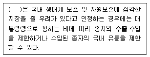
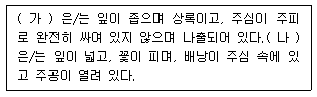
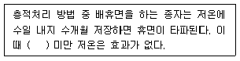
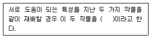

종자산업기사 (2016-03-06 기출문제)
1과목: 종자생산학 및 종자법규
1. 종자관리요강에서 포장검사 시 겉보리의 특정병이 아닌 것은?
- 흰가루병
- 겉깜부기병
- 속깜부기병
- 보리줄무늬병
(정답률: 72%)

2. 종자를 토양에 파종했을 때 새싹이 지상으로 출현하는 것을 무엇이라 하는가?
- 출아
- 유근
- 맹아
- 부아
(정답률: 92%)
3. 종자관리요강에서 보증종자에 대한 사후관리시험의 검사항목인 것은?
- 발아율
- 정립율
- 품종순도
- 피해립율
(정답률: 74%)
4. 종자검사요령에서 “빽빽이 군집한 화서 또는 근대 속에서는 화서의 일부“의 용어는?
- 속생
- 배
- 석과
- 화방
(정답률: 75%)
5. 식물신품종법상 과수와 임목의 경우 품종보호권의 존속기간은?
- 15년
- 20년
- 25년
- 30년
(정답률: 81%)
6. 종자검사요령에서 주병 또는 배주의 기부로부터 자라 나온 다육질이며 간혹 유색인 종자의 피막 또는 부속기관은?
- 망
- 종피
- 부리
- 포엽
(정답률: 87%)
7. 다음 중 단일성 식물로만 이루어진 것은?
- 무궁화, 감자
- 티머시, 토마토
- 크로버, 백일홍
- 국화, 딸기
(정답률: 79%)
8. 종자관리요강에서 포장검사 용어 중 소집단의 한 부분으로부터 얻어진 적은 양의 시료를 말하는 것은?
- 소집단
- 합성시료
- 1차시료
- 제출시료
(정답률: 86%)
9. 다음 중 식물신품종보호법상의 신규성에 대한 내용 중 옳은 것은?
- 과수 및 임목인 경우에는 6년 이상 해당 종자나 그 수확물이 이용을 목적으로 양도 되지 아니한 경우에는 그 품종
- 과수 및 임목인 경우에는 4년 이상 해당 종자나 그 수확물이 이용을 목적으로 양도 되지 아니한 경우에는 그 품종
- 과수 및 임목인 경우에는 3년 이상 해당 종자나 그 수확물이 이용을 목적으로 양도 되지 아니한 경우에는 그 품종
- 과수 및 임목인 경우에는 2년 이상 해당 종자나 그 수확물이 이용을 목적으로 양도 되지 아니한 경우에는 그 품종
(정답률: 62%)
10. 다음 중 ( )에 알맞은 내용은?

- 농촌진흥청장
- 국립종자원장
- 농림축산식품부장관
- 환경부장관
(정답률: 79%)
11. 종자관련법상 보증의 유효기간이 틀린 것은?
- 채소 : 2년
- 버섯 : 1개월
- 감자 : 2개월
- 콩 : 3개월
(정답률: 80%)
12. 도생배주에서 생긴 종자의 특성으로 종피와 다른 색을 띠며 가는 선이나 또는 홈을 이루는 것은?
- 봉선
- 제
- 주공
- 합점
(정답률: 82%)
13. 종자관련법상 등재되거나 신고되지 아니한 품종명칭을 사용하여 종자를 판매하거나 보급한 자의 과태료 기준은?
- 5천만원 이하
- 3천만원 이하
- 2천만원 이하
- 1천만원 이하
(정답률: 86%)
14. 감자보다 바이러스에 더 예민한 지표식물에 감자의 즙액을 접종하여 병의 발생 여부를 검정하는 것은?
- 개벽검정
- 괴경단위재식법
- 효소결합항체법
- 접종검정법
(정답률: 67%)
15. 종자관리요강에서 수립적응성시험의 신청을 위해 해당 작물의 신청 관련법인 또는 단체로 옳지 않은 것은?
- 버섯 : 한국종균생산협회
- 약용작물 : 한국생약협회
- 녹비작물 : 농업협동조합법에 의한 농업협동중앙회
- 식량작물 : 농촌진흥청
(정답률: 80%)
16. 다음 중 (가), (나)에 알맞은 내용은?

- 가: 나자식물, 나: 피자식물
- 가: 나자식물, 나: 겉씨식물
- 가: 피자식물, 나: 나자식물
- 가: 피자식물, 나: 속씨식물
(정답률: 91%)
17. 다음 중 ( )에 알맞은 온도는?

- 6℃
- 4℃
- 2℃
- 0℃
(정답률: 82%)
18. 다음 중 상온의 공기 또는 약간 가열한 공기를 곡물 층에 통풍하여 건조하는 방법은?
- 천일건조
- 밀봉건조
- 상온통풍건조
- 냉동건조
(정답률: 96%)
19. 종자의 발아를 촉진하고 초기생육을 빠르게 하여 균일한 모를 얻기 위해 싹을 틔어서 파종하는 것은?
- 침종
- 최아
- 선종
- 파종
(정답률: 81%)
20. 종자관련법상 품종목록법상 품종목록에 등재품종등의 종자 생산에 관한 설명 중 틀린 것은?
- 국립종자원장은 종자생산을 대행할 수 있다.
- 산림청장은 종자생산을 대행할 수 있다.
- 특별시장은 종자생산을 대행할 수 있다.
- 도지사는 종자생산을 대행할 수 있다.
(정답률: 58%)
2과목: 식물육종학
21. 계통육종법에 관한 설명으로 틀린 것은?
- F1 세대는 이형접합성이 증가되어 계통의 상가적 유전분산이 작아진다.
- F3 세대는 개체선발과 계통재배 및 계통선발을 반복한다.
- 잡종 초기세대부터 계통단위로 선발한다.
- 육종가의 경험과 선발 안목이 주요하다.
(정답률: 69%)
22. 자가불화합성을 나타내는 설명으로 옳지 않은 것은?
- 보족유전자에 의해 조절된다.
- 자가불화합성의 유전양식에는 배우체형과 포자체형이 있다.
- 자가불화합성 타파를 위해서는 뇌수분 또는 고농도 CO2처리 방법 등이 있다.
- 자가불화홥성 식물에 자가수분을 하면 꽃가루의 발아, 꽃가루관의 신장이 억제된다.
(정답률: 67%)
23. 다음 중 화분친의 유전자형에 따라 후대에 전부 가임이거나 가임과 불임이 1:1로 분리되는 것은?
- 유전자적 웅성불임성
- 세포질적 웅성불임성
- 포자체형 유전자적 웅성불임성
- 세포질적 유전자적 웅성불임성
(정답률: 78%)
24. 다음 중 정역교배 효과란?
- 세포질 효과
- F1이 지식 될 때의 효과
- F1이 모친과 여교잡 될 때의 효과
- F1이 부친과 여교잡 될 때의 효과
(정답률: 52%)
25. 다음 중 조합 육종이 아닌 것은?
- 단간품종과 다수성 품종을 교배하여 단간 다수성 품종을 육성한다.
- A저항성 품종과 B저항성 품종을 교배하여 복합저항성 품종을 교배하여 단간조숙성 품종을 육성한다.
- 단간품종과 조생품종을 교배하여 극 조생종을 육성한다.
- 조생품종과 조생품종을 교배하여 극 조생종을 육성한다.
(정답률: 68%)
26. 여교배육종에서 반복친과 1회친에 대한 설명으로 옳은 것은?
- 반복친은 한 가지 결점만 가지고, 도입하고자하는 유전자는 폴리진인 것이 좋다.
- 반복친은 한 가지 결점만 가지고, 도입하고자하는 유전자는 소수의 주동유전자인 것이 좋다.
- 반복친과 1회친은 서로 원연품종이 바람직하다.
- 반복친은 비실용품종으로 하고, 1회친은 실용품종으로 하는 것이 바람직하다.
(정답률: 63%)
27. 다음 중 교잡에 관한 설명으로 옳은 것은?
- 여교잡을 시키면 자식시킨 것보다 F2에서 유전자형의 출현이 단순해진다.
- 여교잡에서 목표형질이 우성인 경우에는 F2를 생산하고, 거기에 개량하고자하는 품종을 교배시켜 나간다.
- 복교잡은 유용한 유전자를 풍부하게 도입 할 수 있으며, 단교잡에 비해 유전자 구성이 단순해진다.
- 옥수수와 같은 타가수정 작물은 복교잡을 만들 수 없다.
(정답률: 45%)
28. 다음 중 균일도가 가장 높은 것은?
- 단교잡종
- 3원교잡종
- 복교잡종
- 합성품종
(정답률: 87%)
29. 변이와 육종관계에 대한 내용으로 옳지 않은 것은?
- 육종소재가 되는 변이의 존재야말로 육종의 기본이 된다.
- 환경에 의한 변이도 육종과정을 통하여 고정 시킬 수 있다.
- 육종의 대상이 되는 농업상 중요한 실용형질은 대부분이 연속적 변이를 나타내는 양적형질이다.
- 변이의 유발빈도가 높아지고 인위돌연변이 유발의 방향성까지 조절될 수 있다면 육종사업은 비약적인 발전을 가져오게 될 것이다.
(정답률: 73%)
30. 재료의 측정 단위가 달라도 편차의 정도를 평균값으로 나누어서 양적형질을 직접 비교할 수 있는 통계적 방법은?
- 최빈치
- 중앙치
- 변이계수
- 표준편차
(정답률: 53%)
31. 다음 중 배수성이 2n, 3n, 4n이면, 이와 같이 여러 가지 배수체가 있는 식물은?
- 작약
- 모란
- 오렌지
- 시금치
(정답률: 70%)
32. 복이배체의 게놈 구성을 옳게 표현한 것은? (단, 알파벳 기호는 게놈을 의미함.)
- AAAA
- AABBCC
- AAABBB
- ABC
(정답률: 62%)
33. 집단육종법에 대한 설명으로 옳게 표현한 것은?
- 자연선택을 이용할 수 있다.
- 육종규모가 작아야 한다.
- 선발과정이 복잡하다.
- 양적형질 개량에 효과적이다.
(정답률: 80%)
34. 목표 형질에 대해 육종가에 의한 개체 선발시기가 가장 늦은 육종방법은?
- 계통육종법
- 집단육종법
- 파생계통육종법
- 돌연변이육종법
(정답률: 65%)
35. 다음 중 벼의 인공교배 방법으로 가장 효율적인 것은?
- 개화전날 오전 10~12시에 제웅하고, 제웅 다음날 4시 이후에 수분시킨다.
- 개화전날 오전 10~12시에 제웅하고, 제웅 당일 오후 4시 이후에 수분시킨다.
- 개화전날 오후 4시 이후에 제웅하고, 제웅하고, 제웅 2일후 오후4시 이후에 수분시킨다.
- 개화전날 오후 4시 이후에 제웅하고, 제웅 다음날 오전 10~12시에 수분시킨다.
(정답률: 59%)
36. 유전자의 재조합빈도에 대한 설명으로 틀린 것은?
- 두 연관유전자 사이의 재조합빈도는 0~50%의 범위에 있다.
- 재조합빈도가 50%이면 독립적임을 나타낸다.
- 재조합빈도가 50%에 가까울수록 연관이 강하다.
- 재조합빈도는 검정교배나 F2의 표현형 분리비에 의해 구한다.
(정답률: 56%)
37. 2쌍의 비대립유전자가 중복유전자로 작용할 때 F2 세대의 분리비는 얼마인가?
- 9 : 7
- 15 : 1
- 9 : 6
- 13 : 3
(정답률: 76%)
38. 타식성 작물 집단에서 최초 유전자형 비율이 AA : Aa : aa = 0.4 : 0.4 : 0.2일 때 Hardy-Weinberg 법칙에 의한 유전자 평형 후의 비율은?
- 0.4 : 0.4 : 0.2
- 0.25 : 0.50 : 0.25
- 0.16 : 0.80 : 0.04
- 0.36 : 0.48 : 0.16
(정답률: 54%)
39. 다음의 잡종세대 중에서 이형접합체의 비율이 가장 높은 세대는?
- F1 식물
- F2 식물
- F3 식물
- F4 식물
(정답률: 65%)
40. 다음 중 반수체의 작성방법으로 옳지 않은 것은?
- 약 또는 화분배양
- 보리, 밀, 감자 등의 작물에서 종∙속간 교배
- 방사선 처리
- 콜히친의 처리
(정답률: 50%)
3과목: 재배원론
41. 화아분화나 과실의 성숙을 촉진시킬 목적으로 실시하는 작업은?
- 환상박피
- 순지르기
- 절상
- 잎따기
(정답률: 80%)
42. 친환경농업에 관련된 설명으로 옳지 않은 것은?
- 유기농업: 농약과 화학비료를 사용하지 않고 안전한 농산물을 얻는 농업
- 생태농업: 지역폐쇄시스템에서 작물양분과 병해충 종합관리기술을 이용하여 생태계 균형 유지에 중점을 두는 농업
- 저투입. 지속농업: 환경에 부담을 주지 않고 영원히 유지할 수 있는 농업
- 자연농업: 지력을 토대로 한 포장에 종자, 비료, 농약 등을 달리하여 환경문제를 최소화하는 농업
(정답률: 70%)
43. 작물의 종류와 시비방법에 대한 설명이 바르게 된 것은?
- 콩과인 알팔파는 벼과인 오처드그라스에 비하여 질소, 칼륨, 석회 등을 훨씬 빨리 흡수한다.
- 혼파 하였을 때 질소를 많이 주면 콩과가 우세해진다.
- 담배, 사탕무는 암모니아태질소의 효과가 크고, 질산태 질소를 주면 해가 되는 경우도 있다.
- 고구마의 3요소 흡수량의 크기는 인산＞질소＞칼륨의 순위이다.
(정답률: 60%)
44. 다음 중 ( ) 에 알맞은 내용은?

- 중경작물
- 보호작물
- 흡비작물
- 동반작물
(정답률: 89%)
45. 다음 작물 중에서 내습성이 가장 강한 것은?
- 율무
- 유채
- 보리
- 메밀
(정답률: 44%)
46. 다음 중 접목의 목적과 방법이 올바르게 짝지어진 것은?
- 생육을 왕성하게 하고 수령을 늘리기 위한 접목 - 감나무에 고욤나무를 접목
- 병해충저항성을 높이기 위한 접목 - 수박을 박이나 호박에 접목
- 과수나무의 왜화와 결과연형을 단축하고 관리를 쉽게 하기 위한 접목 - 사과나무를 환엽해당에 접목
- 건조한 토양에 대한 환경적응성을 높이기 위한접목 - 서양배나무를 중국콩배에 접목
(정답률: 61%)
47. 배낭속의 난핵과 꽃가루관에서 온 웅핵의 하나가 수정한 결과 생긴 것으로 장차 식물체가 되는 부분은?
- 배
- 배유
- 주심
- 자엽
(정답률: 71%)
48. 식물학상 종자로만 이루어진 것은?
- 옥수수, 참깨
- 콩,참깨
- 벼,보리
- 쌀보리, 유채
(정답률: 54%)
49. 다음 중 습해의 대책이 아닌 것은?
- 내습성 작물 및 품종을 선택한다.
- 심층시비를 실시한다.
- 배수를 철저히 한다.
- 토양공기를 조장하기 위해 중경을 실시하고 석회 및 토양개량제를 시용한다.
(정답률: 80%)
50. 습해의 발생기구에 대한 설명으로 틀린 것은?
- 과습하여 토양산소가 부족하면 직접피해로서 호흡장해가 생긴다.
- 무기성분 (N, P, K, Ca, Mg등)이 과잉흡수, 축적되어 피해를 유발한다.
- 봄과 여름철에는 토양미생물의 활동으로 환원성 유해물질이 생성되어 피해가 커진다.
- 토양전염병해의 전파가 많아지고 작물도 쇠약하여 병해발생을 초래한다.
(정답률: 77%)
51. 콩 농사를 하는 홍길동은 콩밭 둘레에 옥수수를 심어 방풍효과도 거두었다. 이 작부체계로서 가장 적절한 것은?
- 간작
- 혼작
- 교호작
- 주위작
(정답률: 85%)
52. 작물이 영양생장에서 생식생장으로 전환하는데 가장 크게 관여하는 요인은?
- C/N율
- CO2/O2의 비
- 수분과 양분
- 온도와 일장
(정답률: 61%)
53. 작휴법에 대한 설명으로 틀린 것은?
- 채소나 밭벼 등은 건조해와 습해 방지를 위해 평휴법을 이용한다.
- 맥류는 한해와 동해 방지를 위해 휴립구파법을 이용한다.
- 감자는 발아를 촉진하고 배토가 용이하도록 성휴법을 이용한다.
- 조와 콩 등은 배수와 토양통기를 좋게 하기 위해 휴립휴파법을 이용한다.
(정답률: 66%)
54. 종자의 침종과 최아에 대한 설명으로 올바른 것은?
- 벼 종자를 침종할 때는 5℃이하의 수온이 좋다.
- 벼 종자는 종자무게의 30% 정도의 수분을 흡수하여야 발아한다.
- 맥류, 땅콩, 가지 등에서는 침종시키면 발아율이 떨어진다.
- 종자의 최아 정도는 초엽과 뿌리가 나올 정도로 한다.
(정답률: 59%)
55. 다음 중 청고의 개념으로 옳은 것은?
- 벼가 수온이 낮은 유동 청수에 관수되어 서서히 사멸하는 경우
- 벼가 수온이 높은 정체 탁수에 관수되어 급격히 사멸하는 경우
- 벼가 수온이 낮은 유동 청수에 관수되어 급격히 사멸하는 경우
- 벼가 수온이 높은 정체 탁수에 관수되어 서서히 사멸하는 경우
(정답률: 73%)
56. 다음 중 냉해란?
- 작물의 조직세포가 동결되어 받는 피해
- 월동 중 추위에 의하여 작물이 받는 피해
- 생육적온보다 온도가 낮아 작물이 받는 피해
- 저온에 의하여 작물의 조직 내에 결빙이 생겨서 받는 피해
(정답률: 77%)
57. 다음의 설명 중에서 옳은 것은?
- 토양의 양이온치환용량이나 염기치환용량이 커지면 토양 반응 변동에 저항하는 힘인 토양의 완충력이 감소한다.
- 토양의 염기포화도가 35% 이고, 양이온치환용량이 10cmol(+)kg℃-1 이라면 총염기량은 3.5cmol(+)kg℃-1이다.
- 점토나 부식의 입자 중에서 0.1㎛ 이하의 교질로 된 입자가 많아질수록 음이온을 흡착하는 힘이 강해진다.
- 토양의 구조 중에서 단립구조와 이상구조는 토양입자가 서로 결합하지 않은 무구조 상태이기 때문에 모두 소공극이 많아 토양통기가 불량하다.
(정답률: 69%)
58. 과실을 수확한 직후부터 수일간 서늘한 곳에 보관하여 몸을 식히는 것이며, 저장, 수송중 부패를 최소화하기 위해 실시하는 것은?
- 후숙
- 큐어링
- 예냉
- 음건
(정답률: 77%)
59. 다음 중 식물의 생육이 왕성한 여름철의 미기상 변화를 옳게 설명한 것은?
- 지표면의 온도는 낮에는 군락과 비슷하며 밤에는 군락보다 더 낮다.
- 군락 내의 탄산가스 농도는 낮에는 지표면이나 대기중의 탄산가스 농도보다 높다.
- 밤에는 탄산가스가 공기보다 무겁기 때문에 지표면에서 가장 높고 지표면에서 멀어질수록 낮아진다.
- 대기 중의 탄산가스 농도는 약 350ppm으로 지표면과 군락 내에서도 낮과 밤에 따른 변화가 거의 없이 일정하다.
(정답률: 64%)
60. 벼의 키다리병에서 생성된 식물생장조절제는?
- 에틸렌
- 사이토키닌
- 지베렐린
- 2,4-D
(정답률: 79%)
4과목: 식물보호학
61. 물에 녹지 않는 원제를 증량제 계면활성제 등과 혼합하여 분말화 시킨 것은?
- 유제
- 수용제
- 수화제
- 액상수화제
(정답률: 76%)
62. 식물바이러스의 구성성분으로 옳은 것은?
- 핵산과 단백질
- 단백질과 비타민
- 핵산과 탄수화물
- 단백질과 탄수화물
(정답률: 91%)
63. 식물병원성 균류의 일반적인 특징으로 옳지 않은 것은?
- 영양체와 번식체로 구성된다.
- 세포 내 소기관을 가지고 있다.
- 원형질막 안쪽에는 세포벽이 있다.
- 엽록소가 없어서 광합성을 할 수 없다.
(정답률: 67%)
64. sulfonylurea계 제초제인 bensulfuron에 대한 설명으로 옳지 않은 것은?
- 비선택성 제초제이다.
- 잡초의 생장을 저해한다.
- 토양처리 및 생육기 처리제이다.
- 잎과 뿌리로부터 흡수되어 신속하게 분열조직으로 이동한다.
(정답률: 67%)
65. 해충이 살충제에 대하여 저항성을 갖게 되는 기작이 아닌 것은?
- 더듬이의 변형
- 표피층 구성의 변화
- 피부 및 체내 지질의 함량 증가
- 살충제에 대한 체내 작용점의 감수성 저하
(정답률: 84%)
66. 약제를 가스화하여 방제하는 방법으로 수입농산물의 검역방법에 주로 사용되는 것은?
- 훈증법
- 살립법
- 연무법
- 미스트법
(정답률: 75%)
67. 식물병원체가 생산하는 것으로 사람이나 가축에 생리적 장애를 주는 것은?
- 옥신
- 균독소
- 일리시타
- PR-단백질
(정답률: 79%)
68. 중국대륙에서 날아 들어오는 비래해충은?
- 벼애나방
- 감자나방
- 벼밤나방
- 혹명나방
(정답률: 86%)
69. 식물 세포벽을 분해하는 효소가 아닌 것은?
- 펙틴
- 탄닌 분해효소
- 큐틴 분해효소
- 셀룰로오스 분해효소
(정답률: 74%)
70. 농약의 원액이나 유효성분 함량이 높은 ULV제 등을 항공기를 이용하여 살포하는 방법은?
- 연무법
- 관주법
- 살분법
- 미량살포법
(정답률: 61%)
71. 곤충강에 속하지 않는 것은?
- 좀목
- 바퀴목
- 진드기목
- 메뚜기목
(정답률: 67%)
72. 곤충의 다리 마디를 몸통부터 순서대로 나열한 것은?
- 밑마디 - 넓적다리마디 - 종아리마디 - 도래마디 - 발목마디
- 밑마디 - 넓적다리마디 - 도래마디 - 종아리마디 - 발목마디
- 밑마디 - 도래마디 - 넓적다리마디 - 종아리마디 - 발목마디
- 밑마디 - 도래마디 - 종아리마디 - 넓적다리마디 - 발목마디
(정답률: 62%)
73. 괴경번식을 하는 잡초는?
- 벗풀
- 네가래
- 한련초
- 쇠비름
(정답률: 62%)
74. 벼룩에 대한 설명으로 옳지 않은 것은?
- 완전변태 한다.
- 외부기생성 해충이다.
- 날개가 없는 무시아강에 속한다.
- 사람은 물론 고양이나 개에도 해를 가한다.
(정답률: 58%)
75. 화본과 1년생 밭잡초에 속하는 것은?
- 여뀌
- 명아주
- 토끼풀
- 강아지풀
(정답률: 63%)
76. 벼 도열병 방제 방법으로 옳은 것은?
- 만파와 만식을 실시한다.
- 질소 거름을 기준량보다 더 준다.
- 존자소독보다 모판소독이 더 중요하다.
- 생육기에 찬물이 유입되지 않도록 한다.
(정답률: 82%)
77. 광 요구성 잡초종자의 발아에 관여하는 파이토크롬의 활성화 조사에 필요한 빛의 유형은?
- 남색광
- 백색광
- 황색광
- 적색광
(정답률: 95%)
78. 잡초방제를 위한 방법 중 생태적 방제법이 아닌 것은?
- 윤작
- 경운
- 피복작물 재배
- 재식밀도 조절
(정답률: 67%)
79. 잡초를 토양수분 적응성에 따라 분류할 때 바랭이와 명아주는 어느 것에 속하는가?
- 수생잡초
- 건생잡초
- 부유잡초
- 습생잡초
(정답률: 74%)
80. 인위적 처리에 의한 잡초 종자의 휴면타파 방법과 거리가 먼 것은?
- 파상방법
- 냉동저장방법
- 온도처리방법
- 약품처리방법
(정답률: 78%)